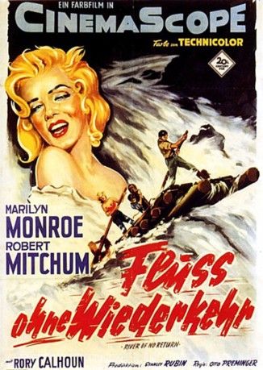

#3234 Fluß ohne Wiederkehr
Alternativ: River of No Return
 
 IMDB-Wertung: 6.7 / 10
IMDB-Wertung: 6.7 / 10  Metascore: 0
Metascore: 0 
Der Witwer Matt Calder hat sich entschlossen, nach langen einsamen Jahren zusammen mit Sohn Mark endlich ein neues Leben zu beginnen. Doch die Reise hat kaum begonnen, da scheint schon alles vorbei. Matt wird von dem brutalen Spieler Harry Weston ausgeraubt und angeschossen. Völlig unerwartet jedoch ist die Reaktion von Westons Verlobter Kay: Sie verschiebt die geplante Heirat, um Matt höchstpersönlich gesund zu pflegen. Doch Matt will seine Rache an Weston auf jeden Fall. Er lockt Kay in die vorbereitete Falle: Auf einer Floßfahrt auf dem reißenden Wildfluss soll es geschehen. Doch Matt hat sich verrechnet. Die Gefahr ist größer, als er es sich träumen kann...
Jahr: 1954
Dauer: 90 Minuten
FSK: 12
Land: USA Studio: Twentieth Century-Fox Film CorporationTonspuren:
Untertitel:
Auflösung: 720p (1280x496) Größe: 3358 MB
Genre: Abenteuer, Western
Regisseur: Otto Preminger, Jean Negulesco
Drehbuch: Frank Fenton, Louis Lantz
Soundtrack: Cyril J. Mockridge, Leigh Harline
Darsteller:
 Robert Mitchum als Matt Calder
Robert Mitchum als Matt Calder Marilyn Monroe als Kay Weston
Marilyn Monroe als Kay Weston Rory Calhoun als Harry Weston
Rory Calhoun als Harry Weston- Tommy Rettig als Mark Calder
 Don Beddoe als Ben , uncredited
Don Beddoe als Ben , uncredited- Larry Chance als Young Punk , uncredited
- Edmund Cobb als Barber , uncredited
 John Doucette als Man in Saloon , uncredited
John Doucette als Man in Saloon , uncredited Hank Mann als Council City Townsman , uncredited
Hank Mann als Council City Townsman , uncredited- Barbara Nichols als Blonde Dancer , uncredited
 Will Wright als Trader , uncredited
Will Wright als Trader , uncredited- Murvyn Vye als Dave Colby
- Douglas Spencer als Sam Benson
 Fred Aldrich als Prospector , uncredited
Fred Aldrich als Prospector , uncredited- Claire Andre als Surrey Driver , uncredited
 Hal Baylor als Young Punk , uncredited
Hal Baylor als Young Punk , uncredited Ralph Bucko als Council City Barfly , uncredited
Ralph Bucko als Council City Barfly , uncredited Roy Bucko als Prospector , uncredited
Roy Bucko als Prospector , uncredited- John Cliff als Leering Man , uncredited
- Cecil Combs als Prospector , uncredited
 Tex Driscoll als Prospector , uncredited
Tex Driscoll als Prospector , uncredited- Geneva Gray als Dance Hall Girl , uncredited
- Al Haskell als Wagon Driver , uncredited
- Ed Hinton als Gambler , uncredited
 Michael Jeffers als Prospector , uncredited
Michael Jeffers als Prospector , uncredited- Dick Johnstone als Prospector , uncredited
- Mitchell Kowall als (uncredited
- Richard LaMarr als Prospector , uncredited
- Anthony Lawrence als Young Punk , uncredited
- Jarma Lewis als Saloon Dancer , uncredited
- Jack Low als Prospector , uncredited
- Jack Mather als Card Table Dealer , uncredited
- Ann McCrea als Dance Hall Girl , uncredited
- Harry Monty als Minor Role , uncredited
- Fay Morley als Dancer , uncredited
 Charles Morton als Prospector , uncredited
Charles Morton als Prospector , uncredited Paul Newlan als Prospector , uncredited
Paul Newlan als Prospector , uncredited- George Patay als Council City Barfly , uncredited
 Jack Perrin als Prospector , uncredited
Jack Perrin als Prospector , uncredited Joe Phillips als Prospector , uncredited
Joe Phillips als Prospector , uncredited- Robert Robinson als Prospector , uncredited
 John Roy als Prospector , uncredited
John Roy als Prospector , uncredited- Danny Sands als Prospector , uncredited
- Ralph Sanford als Bartender , uncredited
- Harry Seymour als Pianist , uncredited
 Arthur Shields als Minister at Tent City , uncredited
Arthur Shields als Minister at Tent City , uncredited- Cap Somers als Council City Barfly , uncredited
 George Sowards als Council City Barfly , uncredited
George Sowards als Council City Barfly , uncredited Jack Tornek als Prospector , uncredited
Jack Tornek als Prospector , uncredited- John Veitch als Young Punk , uncredited
Datei: X:\HD-Western-1900-1959\Fluß ohne Wiederkehr (1954, FSK12, 1280x496).mkv seit 20.02.2016
Festplatte: HD Eastern+Western
 Es gibt insgesamt 98 Filme in der Gruppe 'HD-Western-1900-1959'
Es gibt insgesamt 98 Filme in der Gruppe 'HD-Western-1900-1959'